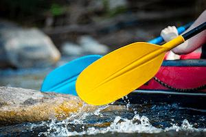

White Water Rafting Company

At White Water Rafting Company, our purpose is to ignite the spirit of adventure
and share the raw power
and beauty of the river with every paddler.
Our mission is to deliver safe, exhilarating whitewater rafting experiences that
create lifelong
memories, build unbreakable team bonds, foster a deep respect for nature, and
inspire guests to
embrace the thrill of the outdoors.
We paddle with passion, prioritize safety above all, guide with expertise and
heart, and believe
that every rapid holds a story waiting to be lived because life is better when
you go with the
flow and chase the rush.
History
Founded in 2013 amid the growing popularity of outdoor adventure sports in the
United States,
white water rafting company was established by a team of experienced river guides
and outdoor
enthusiasts passionate about sharing the thrill of whitewater rafting.
Drawing inspiration from the sport's rich heritage which traces its commercial roots
to the
1940s on rivers like the Salmon and Snake, and its explosive growth in the 1970s and
1980s
following the introduction of modern inflatable rafts and Olympic recognition the
founders set
out to create a premier outfitter on the Arkansas River in Colorado
Starting with a small fleet of high quality rafts and guides certified in advanced
swift water
rescue and first aid, the company quickly earned a reputation for exceptional safety
standards,
expert narration of river ecology and history, and inclusive experiences for
families,
beginners, and seasoned paddlers alike.
Over the years, White water has expanded its offerings to include multi-day
expeditions,
team-building corporate trips, and eco-focused adventures, while actively supporting
river
conservation efforts and local communities.
Today, we continue to uphold our commitment to responsible stewardship of America's
wild rivers,
delivering unforgettable, adrenaline pumping journeys that connect people with
nature, build
confidence, and create lasting memories in some of the country's most spectacular
whitewater
landscapes.